耗时
5 到 10 分钟
网络正常、节点可用时，一次走完通常不需要太久。
这份文档按真实操作顺序写给小白用户：先登录 OriginAI，再购买套餐，再配置网络，接着激活 Claude 账号，最后再登录 Claude。你不需要先懂代理原理，先照着做，遇到问题再看排错。
网络正常、节点可用时，一次走完通常不需要太久。
如果你使用机场客户端，优先走 TUN；自动检测和手动代理都放到备选。
左上角显示网络正常后，先进入激活账号流程，再继续登录 Claude。
大多数失败都不是账号坏了，而是代理链路中断了。
TUN 已打开，再回到 OriginAI 里选择 直连（TUN 模式）。这是成功率最高、最适合新手的一条路线。
先别急着点页面。准备工作做好，后面的登录、购买、网络配置和 Claude 激活会顺很多。尤其是网络这一步，新手最容易卡在“浏览器能打开，但桌面应用不通”。
TUN 模式；自动检测和手动代理都作为备选，只有明确需要时再处理端口。
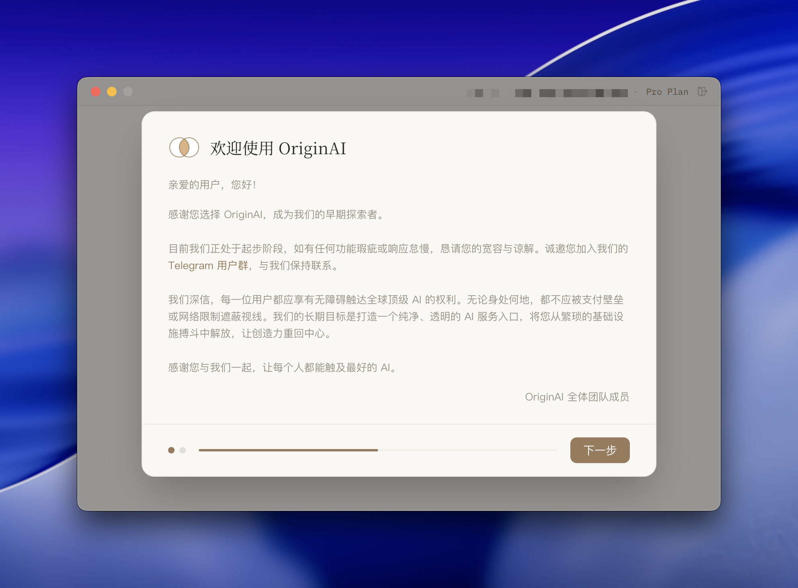
这一步登录的是 OriginAI 桌面端账号，不是 Claude 账号。后面的套餐、网络优化和 Claude 授权，都是从这里继续的。
输入你注册 OriginAI 时使用的邮箱和密码。如果你刚安装完应用，通常欢迎页之后就会来到这一步。
页面右下区域会有 Cloudflare 验证。先把验证通过，再点击底部的 登录 按钮。
如果你还是第一次使用，点底部的 点击注册，优先使用那个能接收验证码的邮箱。国内邮箱也可以，QQ 邮箱也行；如果只是忘记密码，直接走 忘记密码，不用重新建新号。
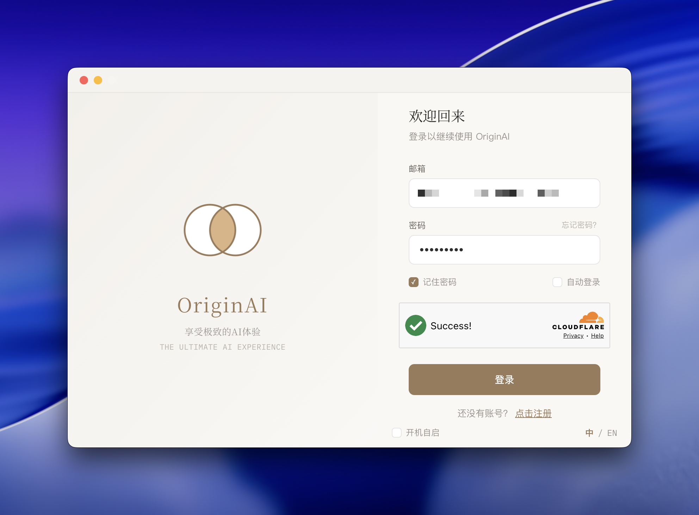
登录完成后，下一步通常就是账户状态和套餐页面。不要急着去登录 Claude，先把套餐和网络处理好。
登录完之后，先看自己是不是免费态。免费态通常不能直接进入完整使用流程，所以这里先把套餐买好；激活账号放到网络优化成功之后再做。
进入账户状态页后，先看右侧的套餐信息和到期时间。如果你已经是 Pro Plan，说明套餐这一步大概率已经没问题。
如果还是免费态，就先点 购买 或 升级。第一次使用通常直接选常用套餐即可，不需要一开始就买很高档位。
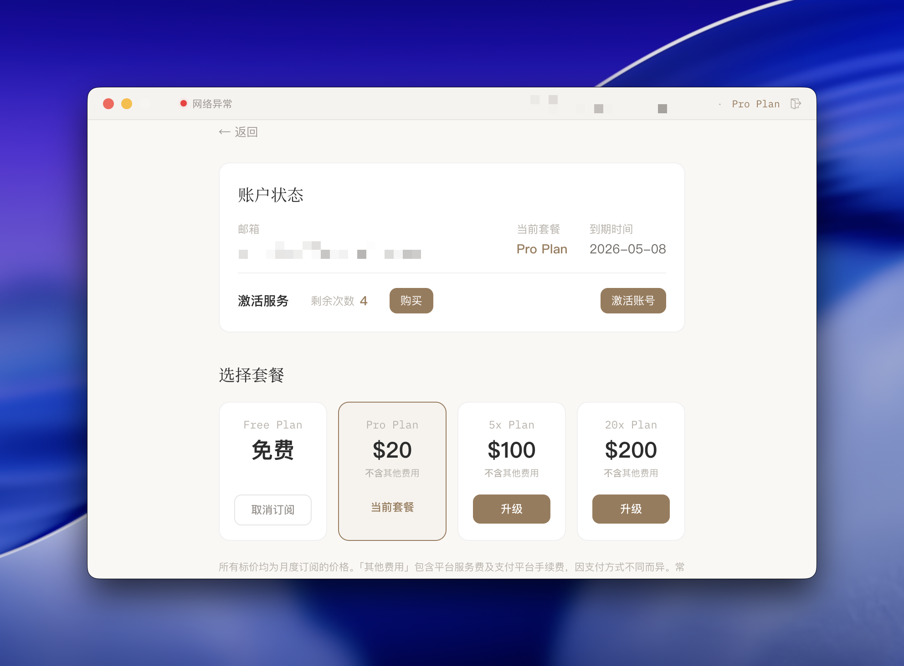
套餐准备好后，先继续走 配置网络。不要在这里直接跳去注册 Claude，正确顺序是 购买套餐 → 网络配置 → 激活账号。
这一步最重要，也最容易把小白卡住。你可以先忘掉“代理原理”这件事，只需要记住一条选择规则：先选 TUN；如果界面显示异常，再回机场检查 TUN 有没有打开。
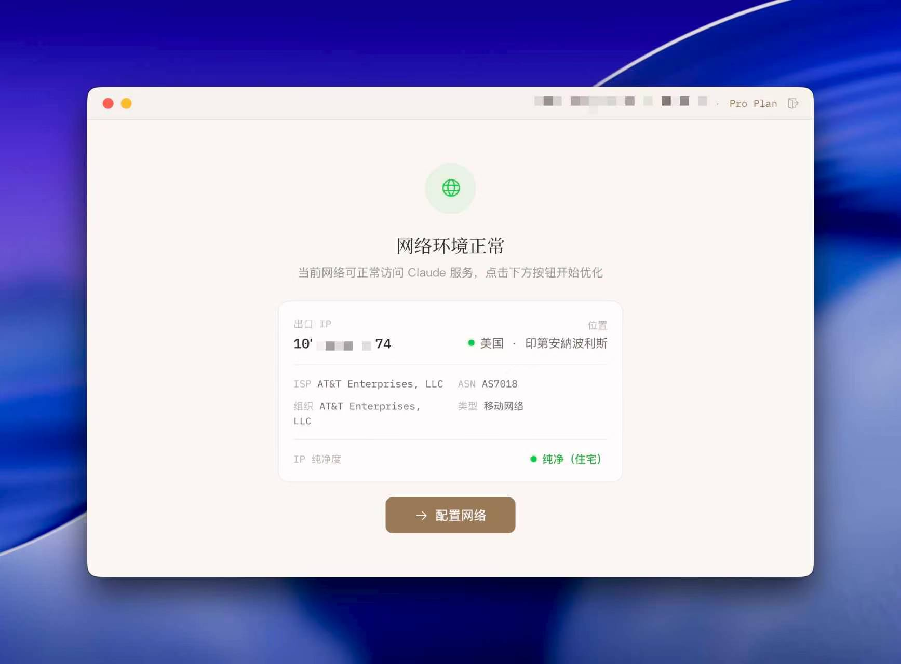
这是主推方案。对绝大多数用户最友好，也最不容易踩端口和系统代理的坑；如果页面异常，先回机场确认 TUN 是否已经打开。
适合你本地网络已经很稳定、自动检测也能正常识别的情况。能直达时可以用它，但不是主推路线。
这是最后备选。只有在自动检测失败、而且你明确知道本地代理地址和端口时才使用，常见填写方式是 127.0.0.1:7890。
TUN 已打开，再回 OriginAI 选择 直连（TUN 模式）。
如果你走机场，优先选亚洲线路，例如香港、新加坡、日本。然后先回客户端确认 TUN 已打开，再来配置 OriginAI。
点击 配置网络 后，会来到连接方式选择页。你不确定时，就优先选 直连（TUN 模式），不要自己猜。
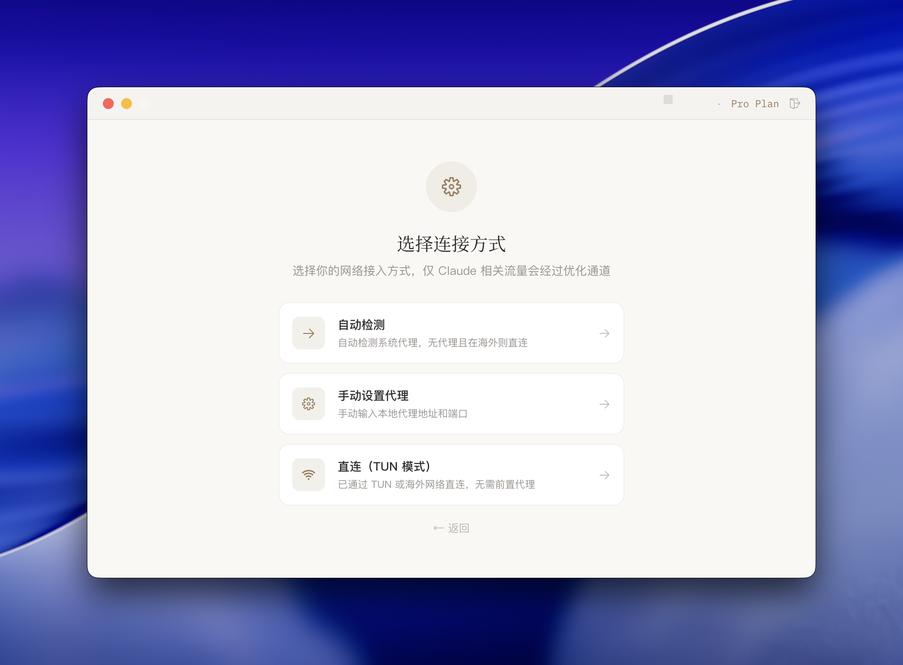
如果 TUN 路线异常，先检查机场侧是否真的开好了；只有 TUN 不方便使用时，再考虑自动检测或手动代理。
手动模式里填写的只会是 本机代理地址和端口，常见是 127.0.0.1 加 7890，不是节点订阅链接，也不是远端服务器地址。
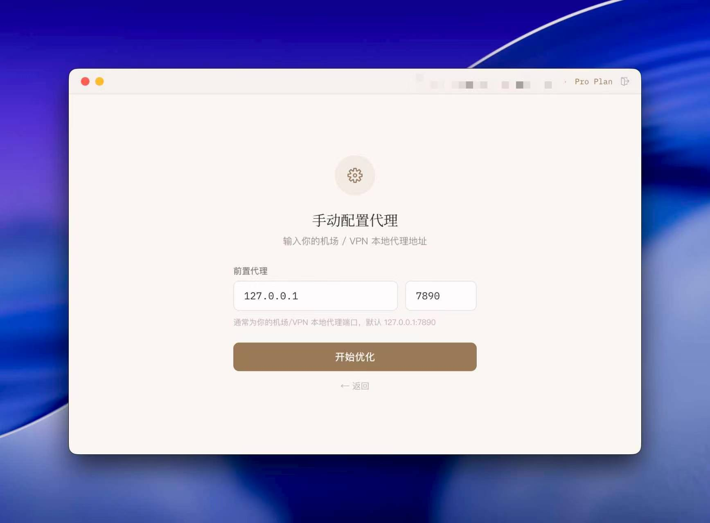
点击开始优化后，应用会检测网络环境、启动代理服务并验证连接。中途别急着关掉代理软件，也别切节点。
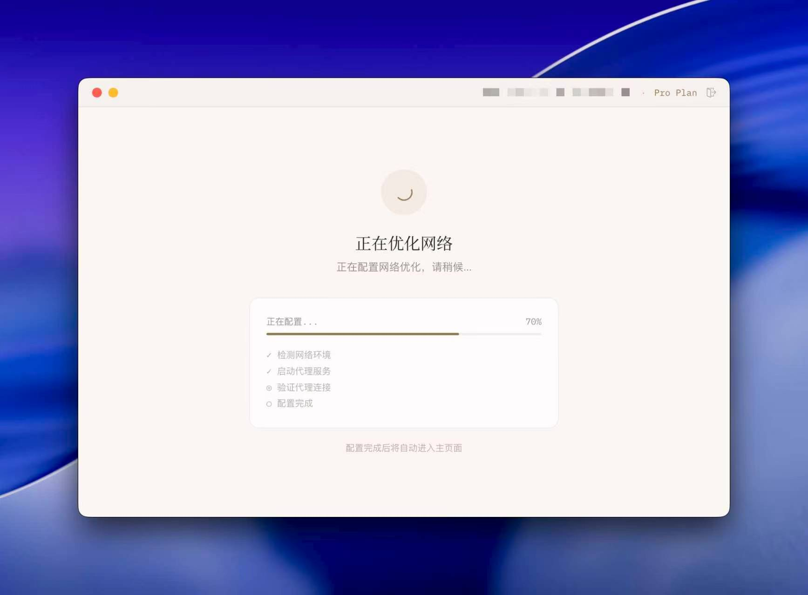
只有看到优化完成、左上角仍然是绿色网络状态时，才说明这条链路真的已经打通。下一段再去做激活账号。
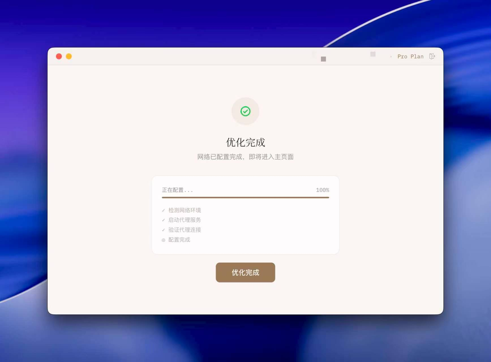
127.0.0.1:7890。
网络优化完成后，不要立刻去点请求登录。先记住一件事：Claude 账户邮箱不是你注册 OriginAI 时填的邮箱，而是系统分配给你的那个 originAI.cc 邮箱。你先用这个邮箱去 claude.ai 注册，等走到手机号这一步，再回 OriginAI 拿新加坡手机号。
先到网页版 / 桌面版的登录入口页面。请求登录 上方那个可复制的邮箱，就是系统分配给你的 Claude 账户邮箱，通常是 originAI.cc 域名。后面整条链路都用这个邮箱，不要换成你自己的 OriginAI 注册邮箱。
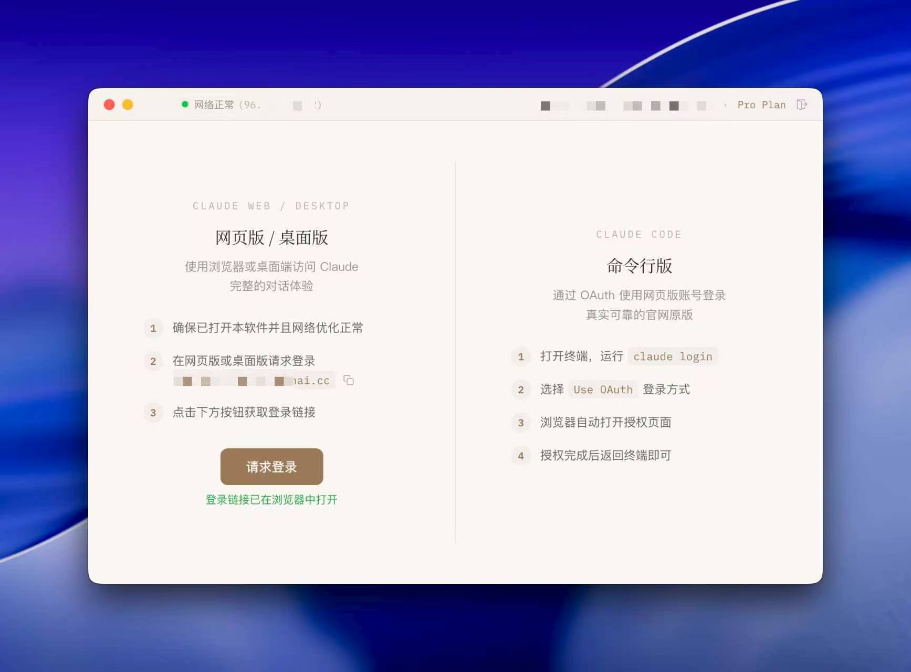
打开 claude.ai，用刚才复制的那个 originAI.cc 邮箱继续注册。先把邮箱这一步走完。
当 Claude 注册流程走到手机号这一步时，再回 OriginAI 主界面。确认左上角还是绿色网络状态，然后点右上角用户名，回到账户状态页。
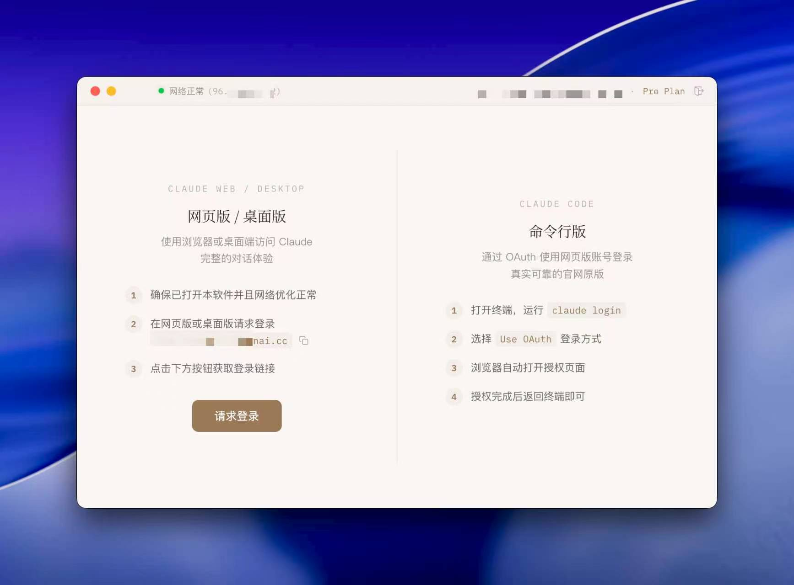
回到账户状态页后，点击 激活账号。确认之后，系统会分配一个 新加坡手机号 给你。
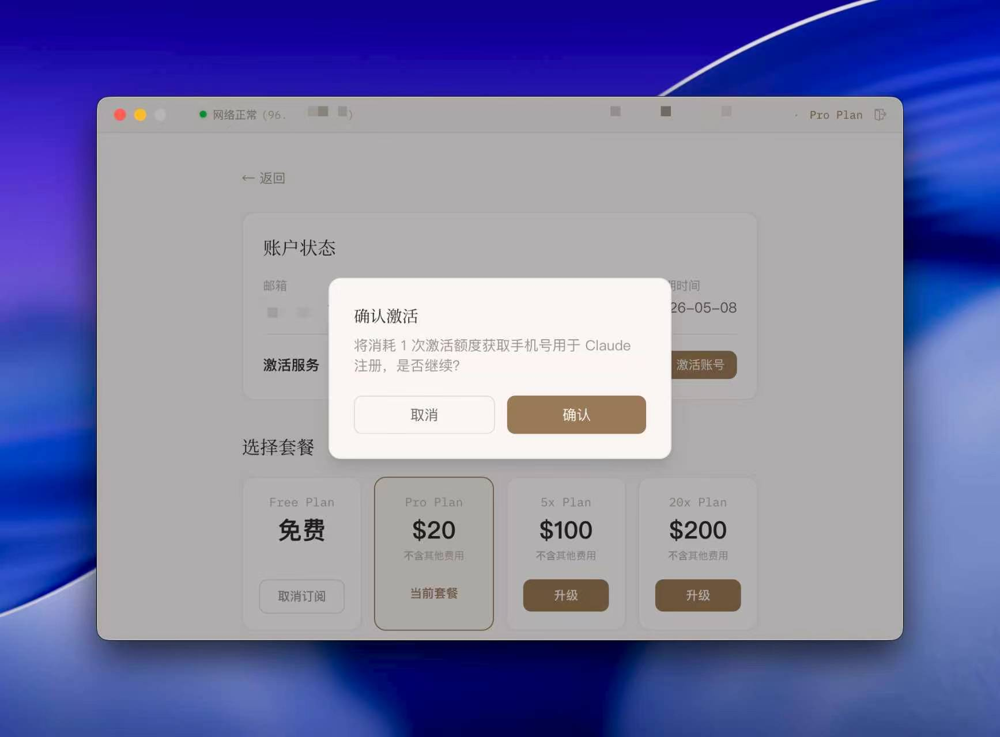
回到 claude.ai 的手机号页面，把手机号国家/地区选成 新加坡，然后把系统分配给你的号码连同 +65 区号 一起填进去，不要换成你自己的手机号。
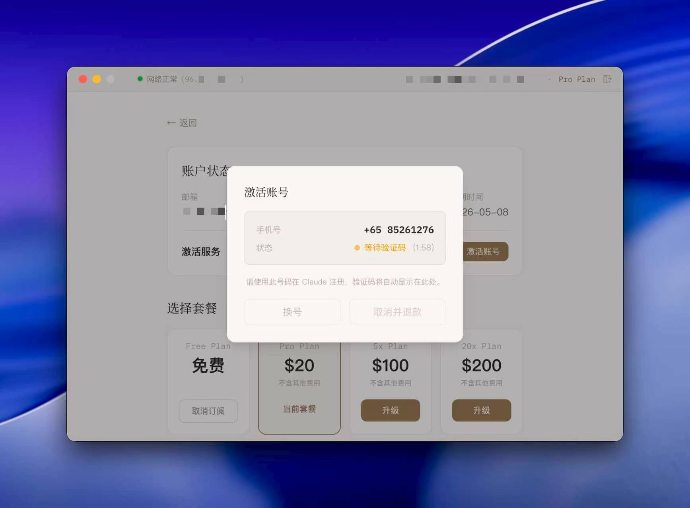
验证码通常会自动回填到激活弹窗里。等它回填完成后，再回 OriginAI 的登录入口点 请求登录，或在终端运行 claude login 继续授权。
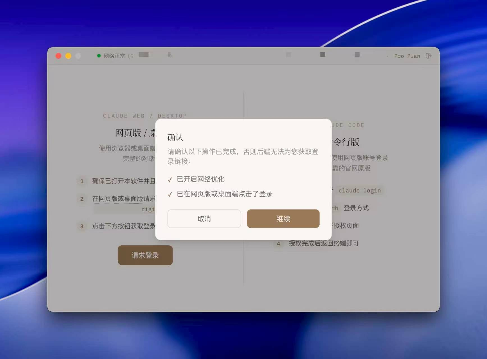
当你顺利进入主界面，说明账户、套餐、网络和 Claude 登录至少已经打通了一次。接下来每次使用时，只要先看一下网络状态是否仍然正常，就能大幅减少折腾。
左上角如果是绿色，通常可以直接继续使用。如果变红，先别急着重登 Claude。
网页版 / 桌面版和 Claude Code 是两条并行入口，网络通了之后都可以走。
如果突然不能用了，除了网络问题，也要顺手看看套餐是否到期、激活次数是否不足。
很多“本来好好的突然不行了”，其实只是机场客户端被退出了，或者 TUN 被关了。
先回机场软件检查节点是否还活着，再确认 TUN 有没有被关掉。如果你原来选的是自动检测，也可以改用 直连（TUN 模式） 或明确的手动代理端口重试。
这通常说明代理链路断了，不代表账号失效。最先检查代理软件是否还在运行、节点有没有切走、系统权限有没有把网络访问拦掉。
这是典型的“小浏览器代理生效、桌面应用代理没接上”场景。对新手最直接的处理方式，是回到机场软件打开 TUN 模式，再在 OriginAI 里重新配置网络。
先保持激活窗口不要关闭，确认注册地区选的是 新加坡，再等 30 到 90 秒；如果一直没有，再考虑换号或重新发起流程。频繁关闭窗口重开，反而会把流程搞乱。
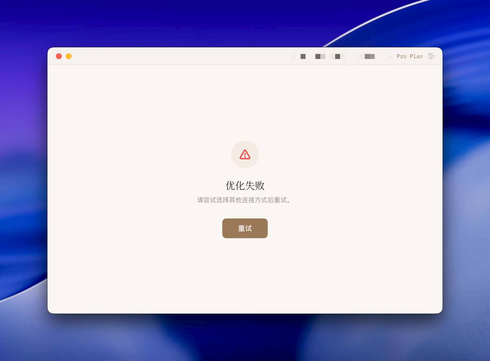
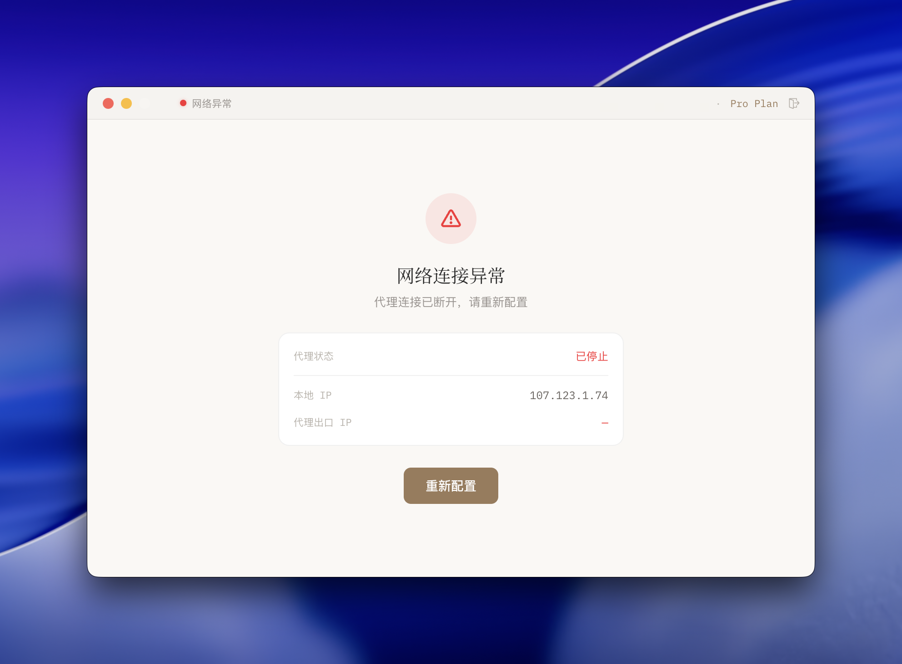
不一定。7890 只是常见值，具体要看你的代理软件设置。关键点不是“必须 7890”，而是“必须填本机代理端口，而不是远端地址”。
建议至少看完登录 OriginAI、套餐激活和网络配置这三部分。Claude Code 的 OAuth 登录只是入口不同，底层依赖的链路是同一套。
不一定。正常情况下配置成功后可以持续使用；只有当代理软件退出、节点失效、系统权限变化或顶部状态变红时，才需要重新配置。